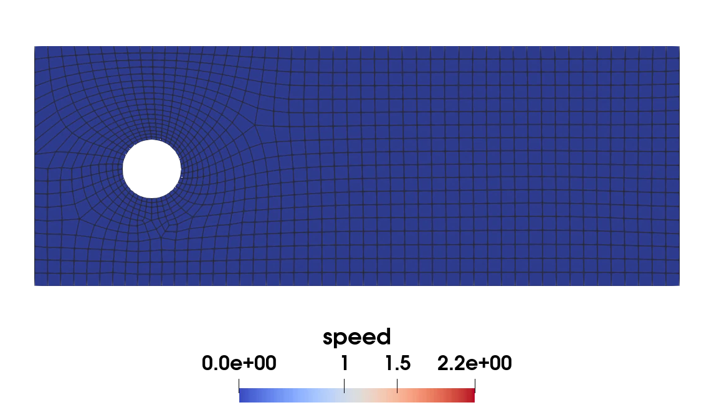
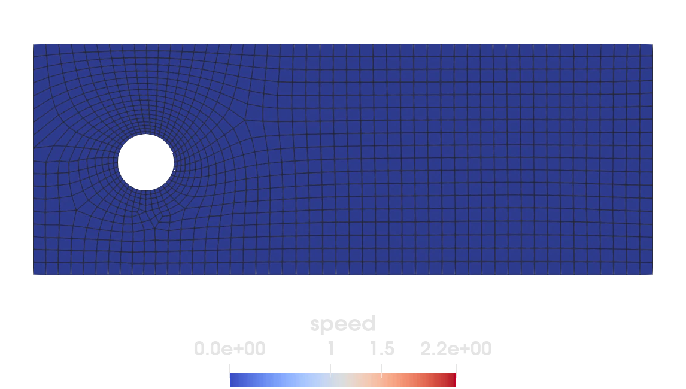

Incompressible Navier-Stokes equations via DifferentialEquations.jl


In this example we focus on a simple but visually appealing problem from fluid dynamics, namely vortex shedding. This problem is also known as von-Karman vortex streets. Within this example, we show how to utilize DifferentialEquations.jl in tandem with Ferrite to solve this space-time problem. To keep things simple we use a naive approach to discretize the system.
Remarks on DifferentialEquations.jl
Many "time step solvers" of DifferentialEquations.jl assume that that the problem is provided in mass matrix form. The incompressible Navier-Stokes equations as stated above yield a DAE in this form after applying a spatial discretization technique - in our case FEM. The mass matrix form of ODEs and DAEs is given as:
\[ M(t) \mathrm{d}_t u = f(u,t)\]
where $M$ is a possibly time-dependent and not necessarily invertible mass matrix, $u$ the vector of unknowns and $f$ the right-hand-side (RHS). For us $f$ can be interpreted as the spatial discretization of all linear and nonlinear operators depending on $u$ and $t$, but not on the time derivative of $u$.
Some theory on the incompressible Navier-Stokes equations
Problem description in strong form
The incompressible Navier-Stokes equations can be stated as the system
\[ \begin{aligned} \partial_t v &= \underbrace{\nu \Delta v}_{\text{viscosity}} - \underbrace{(v \cdot \nabla) v}_{\text{advection}} - \underbrace{\nabla p}_{\text{pressure}} \\ 0 &= \underbrace{\nabla \cdot v}_{\text{incompressibility}} \end{aligned}\]
where $v$ is the unknown velocity field, $p$ the unknown pressure field, $\nu$ the dynamic viscosity and $\Delta$ the Laplacian. In the derivation we assumed a constant density of 1 for the fluid and negligible coupling between the velocity components.
Our setup is derived from Turek's DFG benchmark. We model a channel with size $0.41 \times 1.1$ and a hole of radius $0.05$ centered at $(0.2, 0.2)$. The left side has a parabolic inflow profile, which is ramped up over time, modeled as the time dependent Dirichlet condition
\[ v(x,y,t) = \begin{bmatrix} 4 v_{in}(t) y (0.41-y)/0.41^2 \\ 0 \end{bmatrix}\]
where $v_{in}(t) = \text{clamp}(t, 0.0, 1.5)$. With a dynamic viscosity of $\nu = 0.001$ this is enough to induce turbulence behind the cylinder which leads to vortex shedding. The top and bottom of our channel have no-slip conditions, i.e. $v = [0,0]^{\textrm{T}}$, while the right boundary has the do-nothing boundary condition $\nu \partial_{\textrm{n}} v - p n = 0$ to model outflow. With these boundary conditions we can choose the zero solution as a feasible initial condition.
Derivation of semi-discrete weak form
By multiplying test functions $\varphi$ and $\psi$ from a suitable test function space on the strong form, followed by integrating over the domain and applying partial integration to the pressure and viscosity terms we can obtain the following weak form
\[ \begin{aligned} \int_\Omega \partial_t v \cdot \varphi &= - \int_\Omega \nu \nabla v : \nabla \varphi - \int_\Omega (v \cdot \nabla) v \cdot \varphi + \int_\Omega p (\nabla \cdot \varphi) + \int_{\partial \Omega_{N}} \underbrace{(\nu \partial_n v - p n )}_{=0} \cdot \varphi \\ 0 &= \int_\Omega (\nabla \cdot v) \psi \end{aligned}\]
for all possible test functions from the suitable space.
Now we can discretize the problem as usual with the finite element method utilizing Taylor-Hood elements (Q2Q1) to yield a stable discretization in mass matrix form:
\[ \underbrace{\begin{bmatrix} M_v & 0 \\ 0 & 0 \end{bmatrix}}_{:=M} \begin{bmatrix} \mathrm{d}_t\hat{v} \\ \mathrm{d}_t\hat{p} \end{bmatrix} = \underbrace{\begin{bmatrix} A & B^{\textrm{T}} \\ B & 0 \end{bmatrix}}_{:=K} \begin{bmatrix} \hat{v} \\ \hat{p} \end{bmatrix} + \begin{bmatrix} N(\hat{v}, \hat{v}, \hat{\varphi}) \\ 0 \end{bmatrix}\]
Here $M$ is the singular block mass matrix, $K$ is the discretized Stokes operator and $N$ the nonlinear advection term, which is also called trilinear form. $\hat{v}$ and $\hat{p}$ represent the time-dependent vectors of nodal values of the discretizations of $v$ and $p$ respectively, while $\hat{\varphi}$ is the choice for the test function in the discretization. The hats are dropped in the implementation and only stated for clarity in this section.
Commented implementation
Now we solve the problem with Ferrite and DifferentialEquations.jl. What follows is a program spliced with comments. The full program, without comments, can be found in the next section.
First we load Ferrite and some other packages we need
using Ferrite, SparseArrays, BlockArrays, LinearAlgebra, VTKHDFWe do not need the complete SciML/DifferentialEquations suite. We load DiffEqBase, which provides most of the ODE infrastructure (which can also handle DAEs in mass matrix form), and the Rodas5P solver from OrdinaryDiffEqRosenbrock.
using DiffEqBaseusing OrdinaryDiffEqRosenbrock: Rodas5Pusing SciMLIterators: intervalsusing ADTypes: AutoFiniteDiffimport SciMLLoggingWe start off by defining our only material parameter.
ν = 1.0 / 1000.0; #dynamic viscosityNext a rectangular grid with a cylinder in it has to be generated. We use Gmsh.jl for the creation of the mesh and FerriteGmsh.jl to translate it to a Ferrite.Grid. Note that the mesh is pretty fine, leading to a high memory consumption when feeding the equation system to direct solvers.
using FerriteGmshusing FerriteGmsh: GmshGmsh.initialize()gmsh.option.set_number("General.Verbosity", 2)dim = 2;We specify first the rectangle, the cylinder, the surface spanned by the cylinder and the boolean difference of rectangle and cylinder.
rect_tag = gmsh.model.occ.add_rectangle(0, 0, 0, 1.1, 0.41)circle_tag = gmsh.model.occ.add_circle(0.2, 0.2, 0, 0.05)circle_curve_tag = gmsh.model.occ.add_curve_loop([circle_tag])circle_surf_tag = gmsh.model.occ.add_plane_surface([circle_curve_tag])gmsh.model.occ.cut([(dim, rect_tag)], [(dim, circle_surf_tag)])Now, the geometrical entities need to be synchronized in order to be available outside of gmsh.model.occ
gmsh.model.occ.synchronize()In the next lines, we add the physical groups needed to define boundary conditions.
bottomtag = gmsh.model.model.add_physical_group(dim - 1, [6], -1, "bottom")lefttag = gmsh.model.model.add_physical_group(dim - 1, [7], -1, "left")righttag = gmsh.model.model.add_physical_group(dim - 1, [8], -1, "right")toptag = gmsh.model.model.add_physical_group(dim - 1, [9], -1, "top")holetag = gmsh.model.model.add_physical_group(dim - 1, [5], -1, "hole")Since we want a quad mesh, we specify the meshing algorithm to the quasi structured quad one. For a complete list, see the Gmsh docs.
gmsh.option.setNumber("Mesh.Algorithm", 11)gmsh.option.setNumber("Mesh.MeshSizeFromCurvature", 20)gmsh.option.setNumber("Mesh.MeshSizeMax", 0.05)In the next step, the mesh is generated and finally translated.
gmsh.model.mesh.generate(dim)grid = togrid()Gmsh.finalize();Function space
To ensure stability we utilize the Taylor-Hood element pair Q2-Q1. We have to utilize the same quadrature rule for the pressure as for the velocity, because in the weak form the linear pressure term is tested against a quadratic function.
ip_v = Lagrange{RefQuadrilateral, 2}()^dimqr = QuadratureRule{RefQuadrilateral}(4)ip_p = Lagrange{RefQuadrilateral, 1}()cellvalues = MultiFieldCellValues(qr, (v = ip_v, p = ip_p))dh = DofHandler(grid)add!(dh, :v, ip_v)add!(dh, :p, ip_p)close!(dh);Boundary conditions
As in the DFG benchmark we apply no-slip conditions to the top, bottom and cylinder boundary. The no-slip condition states that the velocity of the fluid on this portion of the boundary is fixed to be zero.
ch = ConstraintHandler(dh);nosplip_facet_names = ["top", "bottom", "hole"];∂Ω_noslip = union(getfacetset.((grid,), nosplip_facet_names)...);noslip_bc = Dirichlet(:v, ∂Ω_noslip, (x, t) -> Vec((0.0, 0.0)), [1, 2])add!(ch, noslip_bc);The left boundary has a parabolic inflow with peak velocity of 1.5. This ensures that for the given geometry the Reynolds number is 100, which is already enough to obtain some simple vortex streets. By increasing the velocity further we can obtain stronger vortices - which may need additional refinement of the grid.
∂Ω_inflow = getfacetset(grid, "left");The kink in the velocity profile will lead to a discontinuity in the pressure at $t=1$. This needs to be considered in the DiffEq init by providing the keyword argument d_discontinuities=[1.0].
vᵢₙ(t) = min(t * 1.5, 1.5) #inflow velocityparabolic_inflow_profile(x, t) = Vec((4 * vᵢₙ(t) * x[2] * (0.41 - x[2]) / 0.41^2, 0.0))inflow_bc = Dirichlet(:v, ∂Ω_inflow, parabolic_inflow_profile, [1, 2])add!(ch, inflow_bc);The outflow boundary condition has been applied on the right side of the cylinder when the weak form has been derived by setting the boundary integral to zero. It is also called the do-nothing condition. Other outflow conditions are also possible.
∂Ω_free = getfacetset(grid, "right");close!(ch)update!(ch, 0.0);Linear system assembly
Next we describe how the block mass matrix and the Stokes matrix are assembled.
For the block mass matrix $M$ we remember that only the first equation had a time derivative and that the block mass matrix corresponds to the term arising from discretizing the time derivatives. Hence, only the upper left block has non-zero components.
function assemble_mass_matrix(cv::MultiFieldCellValues, M::SparseMatrixCSC, dh::DofHandler) # Allocate a buffer for the local matrix and some helpers, together with the assembler. n_basefuncs_v = getnbasefunctions(cv.v) n_basefuncs_p = getnbasefunctions(cv.p) n_basefuncs = n_basefuncs_v + n_basefuncs_p v▄, p▄ = 1, 2 Mₑ = BlockedArray(zeros(n_basefuncs, n_basefuncs), [n_basefuncs_v, n_basefuncs_p], [n_basefuncs_v, n_basefuncs_p]) # It follows the assembly loop as explained in the basic tutorials. mass_assembler = start_assemble(M) for cell in CellIterator(dh) fill!(Mₑ, 0) Ferrite.reinit!(cv, cell) for q_point in 1:getnquadpoints(cv) dΩ = getdetJdV(cv, q_point) # Remember that we assemble a vector mass term, hence the dot product. # There is only one time derivative on the left hand side, so only one mass block is non-zero. for i in 1:n_basefuncs_v φᵢ = shape_value(cv.v, q_point, i) for j in 1:n_basefuncs_v φⱼ = shape_value(cv.v, q_point, j) Mₑ[BlockIndex((v▄, v▄), (i, j))] += φᵢ ⋅ φⱼ * dΩ end end end assemble!(mass_assembler, celldofs(cell), Mₑ) end return Mend;Next we discuss the assembly of the Stokes matrix appearing on the right hand side. Remember that we use the same function spaces for trial and test, hence the matrix has the following block form
\[ K = \begin{bmatrix} A & B^{\textrm{T}} \\ B & 0 \end{bmatrix}\]
which is also called saddle point matrix. These problems are known to have a non-trivial kernel, which is a reflection of the strong form as discussed in the theory portion if this example.
function assemble_stokes_matrix(cv::MultiFieldCellValues, ν, K::SparseMatrixCSC, dh::DofHandler) # Again, some buffers and helpers n_basefuncs_v = getnbasefunctions(cv.v) n_basefuncs_p = getnbasefunctions(cv.p) n_basefuncs = n_basefuncs_v + n_basefuncs_p v▄, p▄ = 1, 2 Kₑ = BlockedArray(zeros(n_basefuncs, n_basefuncs), [n_basefuncs_v, n_basefuncs_p], [n_basefuncs_v, n_basefuncs_p]) # Assembly loop stiffness_assembler = start_assemble(K) for cell in CellIterator(dh) # Don't forget to initialize everything fill!(Kₑ, 0) Ferrite.reinit!(cv, cell) for q_point in 1:getnquadpoints(cv) dΩ = getdetJdV(cv, q_point)Assemble local viscosity block of $A$
for i in 1:n_basefuncs_v ∇φᵢ = shape_gradient(cv.v, q_point, i) for j in 1:n_basefuncs_v ∇φⱼ = shape_gradient(cv.v, q_point, j) Kₑ[BlockIndex((v▄, v▄), (i, j))] -= ν * ∇φᵢ ⊡ ∇φⱼ * dΩ end endAssemble local pressure and incompressibility blocks of $B^{\textrm{T}}$ and $B$.
for j in 1:n_basefuncs_p ψ = shape_value(cv.p, q_point, j) for i in 1:n_basefuncs_v divφ = shape_divergence(cv.v, q_point, i) Kₑ[BlockIndex((v▄, p▄), (i, j))] += (divφ * ψ) * dΩ Kₑ[BlockIndex((p▄, v▄), (j, i))] += (ψ * divφ) * dΩ end end end # Assemble `Kₑ` into the Stokes matrix `K`. assemble!(stiffness_assembler, celldofs(cell), Kₑ) end return Kend;Solution of the semi-discretized system via DifferentialEquations.jl
First we assemble the linear portions for efficiency. These matrices are assumed to be constant over time.
To obtain the vortex street a small time step is important to resolve the small oscillation forming. The mesh size becomes important to "only" resolve the smaller vertices forming, but less important for the initial formation.
T = 6.0Δt₀ = 0.001Δt_save = 0.1M = allocate_matrix(dh);M = assemble_mass_matrix(cellvalues, M, dh);K = allocate_matrix(dh);K = assemble_stokes_matrix(cellvalues, ν, K, dh);These are our initial conditions. We start from the zero solution, because it is trivially admissible if the Dirichlet conditions are zero everywhere on the Dirichlet boundary for $t=0$. Note that the time stepper is also doing fine if the Dirichlet condition is non-zero and not too pathological.
u₀ = zeros(ndofs(dh))apply!(u₀, ch);DifferentialEquations assumes dense matrices by default, which is not feasible for semi-discretization of finite element models. We communicate that a sparse matrix with specified pattern should be utilized through the jac_prototyp argument. It is simple to see that the Jacobian and the stiffness matrix share the same sparsity pattern, since they share the same relation between trial and test functions.
jac_sparsity = sparse(K);To apply the nonlinear portion of the Navier-Stokes problem we simply hand over the dof handler and cell values to the right-hand-side (RHS) as a parameter. Furthermore the pre-assembled linear part, our Stokes operator (which is time independent) is passed to save some additional runtime. To apply the time-dependent Dirichlet BCs, we also need to hand over the constraint handler. The basic idea to apply the Dirichlet BCs consistently is that we copy the current solution u, apply the Dirichlet BCs on the copy, evaluate the discretized RHS of the Navier-Stokes equations with this vector. Furthermore we pass down the Jacobian assembly manually. For the Jacobian we eliminate all rows and columns associated with constrained dofs. Also note that we eliminate the mass matrix beforehand in a similar fashion. This decouples the time evolution of the constrained dofs from the true unknowns. The correct solution is enforced by utilizing step and stage limiters. The correct norms are computed by passing down a custom norm which simply ignores all constrained dofs.
An alternative strategy is to hook into the nonlinear and linear solvers and enforce the solution therein. However, this is not possible at the time of writing this tutorial.
apply!(M, ch)struct RHSparams{KT, CH, DH, CV, UT} K::KT # SparseMatrixCSC ch::CH # ConstraintHandler dh::DH # DofHandler cv::CV # MultiFieldCellValues u::UT # Vectorendp = RHSparams(K, ch, dh, cellvalues, copy(u₀))function ferrite_limiter!(u, _, p, t) update!(p.ch, t) return apply!(u, p.ch)endfunction navierstokes_rhs_element!(dvₑ, vₑ, cv) n_basefuncs = getnbasefunctions(cv.v) for q_point in 1:getnquadpoints(cv) dΩ = getdetJdV(cv, q_point) ∇v = function_gradient(cv.v, q_point, vₑ) v = function_value(cv.v, q_point, vₑ) for j in 1:n_basefuncs φⱼ = shape_value(cv.v, q_point, j)Note that in Tensors.jl the definition $\textrm{grad} v = \nabla v$ holds. With this information it can be quickly shown in index notation that
\[[(v \cdot \nabla) v]_{\textrm{i}} = v_{\textrm{j}} (\partial_{\textrm{j}} v_{\textrm{i}}) = [v (\nabla v)^{\textrm{T}}]_{\textrm{i}}\]
where we should pay attention to the transpose of the gradient.
dvₑ[j] -= v ⋅ ∇v' ⋅ φⱼ * dΩ end end returnendfunction navierstokes!(du, u_uc, p::RHSparams, t)Unpack the struct to save some allocations.
(; K, ch, dh, cv, u) = pWe start by applying the time-dependent Dirichlet BCs. Note that we are not allowed to mutate u_uc! Furthermore note that we also can not pre- allocate a buffer for this variable if we want to use AD to derive the Jacobian matrix, which appears in stiff solvers. Therefore, for efficiency reasons, we simply pass down the jacobian analytically.
u .= u_uc update!(ch, t) apply!(u, ch)Now we apply the rhs of the Navier-Stokes equations
# Linear contribution (Stokes operator) mul!(du, K, u) # du .= K * u # nonlinear contribution v_range = dof_range(dh, :v) n_basefuncs = getnbasefunctions(cv.v) vₑ = zeros(n_basefuncs) duₑ = zeros(n_basefuncs) for cell in CellIterator(dh) Ferrite.reinit!(cv, cell) v_celldofs = @view celldofs(cell)[v_range] vₑ .= @views u[v_celldofs] fill!(duₑ, 0.0) navierstokes_rhs_element!(duₑ, vₑ, cv) assemble!(du, v_celldofs, duₑ) end returnend;function navierstokes_jac_element!(Jₑ, vₑ, cv) n_basefuncs = getnbasefunctions(cv.v) for q_point in 1:getnquadpoints(cv) dΩ = getdetJdV(cv, q_point) ∇v = function_gradient(cv.v, q_point, vₑ) v = function_value(cv.v, q_point, vₑ) for j in 1:n_basefuncs φⱼ = shape_value(cv.v, q_point, j)Note that in Tensors.jl the definition $\textrm{grad} v = \nabla v$ holds. With this information it can be quickly shown in index notation that
\[[(v \cdot \nabla) v]_{\textrm{i}} = v_{\textrm{j}} (\partial_{\textrm{j}} v_{\textrm{i}}) = [v (\nabla v)^{\textrm{T}}]_{\textrm{i}}\]
where we should pay attention to the transpose of the gradient.
for i in 1:n_basefuncs φᵢ = shape_value(cv.v, q_point, i) ∇φᵢ = shape_gradient(cv.v, q_point, i) Jₑ[j, i] -= (φᵢ ⋅ ∇v' + v ⋅ ∇φᵢ') ⋅ φⱼ * dΩ end end end returnendfunction navierstokes_jac!(J, u_uc, p, t)Unpack the struct to save some allocations.
(; K, ch, dh, cv, u) = pWe start by applying the time-dependent Dirichlet BCs. Note that we are not allowed to mutate u_uc, so we use our buffer again.
u .= u_uc update!(ch, t) apply!(u, ch)Now we apply the Jacobian of the Navier-Stokes equations.
# Linear contribution (Stokes operator) # Here we assume that J has exactly the same structure as K by construction nonzeros(J) .= nonzeros(K) assembler = start_assemble(J; fillzero = false) # Assemble variation of the nonlinear term n_basefuncs = getnbasefunctions(cv.v) Jₑ = zeros(n_basefuncs, n_basefuncs) vₑ = zeros(n_basefuncs) v_range = dof_range(dh, :v) for cell in CellIterator(dh) Ferrite.reinit!(cv, cell) v_celldofs = @view celldofs(cell)[v_range] vₑ .= @views u[v_celldofs] fill!(Jₑ, 0.0) navierstokes_jac_element!(Jₑ, vₑ, cv) assemble!(assembler, v_celldofs, Jₑ) endFinally we eliminate the constrained dofs from the Jacobian to decouple them in the nonlinear solver from the remaining system.
return apply!(J, ch)end;Finally, together with our pre-assembled mass matrix, we are now able to define our problem in mass matrix form.
rhs = ODEFunction(navierstokes!, mass_matrix = M; jac = navierstokes_jac!, jac_prototype = jac_sparsity)problem = ODEProblem(rhs, u₀, (0.0, T), p);All norms must not depend on constrained dofs. A problem with the presented implementation is that we are currently unable to strictly enforce constraint everywhere in the internal time integration process of DifferentialEquations.jl, hence the values might differ, resulting in worse error estimates. We try to resolve this issue in the future. Volunteers are also welcome to take a look into this!
struct FreeDofErrorNorm ch::ConstraintHandlerend(fe_norm::FreeDofErrorNorm)(u::Union{AbstractFloat, Complex}, t) = DiffEqBase.ODE_DEFAULT_NORM(u, t)(fe_norm::FreeDofErrorNorm)(u::AbstractArray, t) = DiffEqBase.ODE_DEFAULT_NORM(u[fe_norm.ch.free_dofs], t)Now we can put everything together by specifying how to solve the problem. We want to use the adaptive Rosenbrock method Rodas5P. Further we enable the progress bar with the progress and progress_steps arguments. Finally we have to communicate the time step length and initialization algorithm. Since we start with a valid initial state we do not use one of DifferentialEquations.jl initialization algorithms.
At the time of writing this no Hessenberg index 2 initialization is implemented.
To visualize the result we export the grid and our fields to a single temporal VTKHDF file, which can be viewed in ParaView.
timestepper = Rodas5P(autodiff = AutoFiniteDiff(), step_limiter! = ferrite_limiter!);We can obtain some debug information from OrdinaryDiffEq by wrapping the following section into a debug logger.
integrator = init( problem, timestepper; initializealg = NoInit(), dt = Δt₀, adaptive = true, abstol = 1.0e-4, reltol = 1.0e-5, progress = true, progress_steps = 1, verbose = DEVerbosity(SciMLLogging.Detailed()), internalnorm = FreeDofErrorNorm(ch), d_discontinuities = [1.0]);Exporting interpolated solutions of problems containing mass matrices is currently broken. Thus, the intervals iterator is used. Note that solve holds all solutions in the memory.
vtkhdf = VTKHDFGridFile("vortex-street.vtkhdf", dh; temporal = true)for (u, t) in intervals(integrator) write_timestep(vtkhdf, t) do vtk write_solution(vtk, dh, u) endendclose(vtkhdf);Plain program
Here follows a version of the program without any comments. The file is also available here: ns_vs_diffeq.jl.
using Ferrite, SparseArrays, BlockArrays, LinearAlgebra, VTKHDFusing DiffEqBaseusing OrdinaryDiffEqRosenbrock: Rodas5Pusing SciMLIterators: intervalsusing ADTypes: AutoFiniteDiffimport SciMLLoggingν = 1.0 / 1000.0; #dynamic viscosityusing FerriteGmshusing FerriteGmsh: GmshGmsh.initialize()gmsh.option.set_number("General.Verbosity", 2)dim = 2;rect_tag = gmsh.model.occ.add_rectangle(0, 0, 0, 1.1, 0.41)circle_tag = gmsh.model.occ.add_circle(0.2, 0.2, 0, 0.05)circle_curve_tag = gmsh.model.occ.add_curve_loop([circle_tag])circle_surf_tag = gmsh.model.occ.add_plane_surface([circle_curve_tag])gmsh.model.occ.cut([(dim, rect_tag)], [(dim, circle_surf_tag)])gmsh.model.occ.synchronize()bottomtag = gmsh.model.model.add_physical_group(dim - 1, [6], -1, "bottom")lefttag = gmsh.model.model.add_physical_group(dim - 1, [7], -1, "left")righttag = gmsh.model.model.add_physical_group(dim - 1, [8], -1, "right")toptag = gmsh.model.model.add_physical_group(dim - 1, [9], -1, "top")holetag = gmsh.model.model.add_physical_group(dim - 1, [5], -1, "hole")gmsh.option.setNumber("Mesh.Algorithm", 11)gmsh.option.setNumber("Mesh.MeshSizeFromCurvature", 20)gmsh.option.setNumber("Mesh.MeshSizeMax", 0.05)gmsh.model.mesh.generate(dim)grid = togrid()Gmsh.finalize();ip_v = Lagrange{RefQuadrilateral, 2}()^dimqr = QuadratureRule{RefQuadrilateral}(4)ip_p = Lagrange{RefQuadrilateral, 1}()cellvalues = MultiFieldCellValues(qr, (v = ip_v, p = ip_p))dh = DofHandler(grid)add!(dh, :v, ip_v)add!(dh, :p, ip_p)close!(dh);ch = ConstraintHandler(dh);nosplip_facet_names = ["top", "bottom", "hole"];∂Ω_noslip = union(getfacetset.((grid,), nosplip_facet_names)...);noslip_bc = Dirichlet(:v, ∂Ω_noslip, (x, t) -> Vec((0.0, 0.0)), [1, 2])add!(ch, noslip_bc);∂Ω_inflow = getfacetset(grid, "left");vᵢₙ(t) = min(t * 1.5, 1.5) #inflow velocityparabolic_inflow_profile(x, t) = Vec((4 * vᵢₙ(t) * x[2] * (0.41 - x[2]) / 0.41^2, 0.0))inflow_bc = Dirichlet(:v, ∂Ω_inflow, parabolic_inflow_profile, [1, 2])add!(ch, inflow_bc);∂Ω_free = getfacetset(grid, "right");close!(ch)update!(ch, 0.0);function assemble_mass_matrix(cv::MultiFieldCellValues, M::SparseMatrixCSC, dh::DofHandler) # Allocate a buffer for the local matrix and some helpers, together with the assembler. n_basefuncs_v = getnbasefunctions(cv.v) n_basefuncs_p = getnbasefunctions(cv.p) n_basefuncs = n_basefuncs_v + n_basefuncs_p v▄, p▄ = 1, 2 Mₑ = BlockedArray(zeros(n_basefuncs, n_basefuncs), [n_basefuncs_v, n_basefuncs_p], [n_basefuncs_v, n_basefuncs_p]) # It follows the assembly loop as explained in the basic tutorials. mass_assembler = start_assemble(M) for cell in CellIterator(dh) fill!(Mₑ, 0) Ferrite.reinit!(cv, cell) for q_point in 1:getnquadpoints(cv) dΩ = getdetJdV(cv, q_point) # Remember that we assemble a vector mass term, hence the dot product. # There is only one time derivative on the left hand side, so only one mass block is non-zero. for i in 1:n_basefuncs_v φᵢ = shape_value(cv.v, q_point, i) for j in 1:n_basefuncs_v φⱼ = shape_value(cv.v, q_point, j) Mₑ[BlockIndex((v▄, v▄), (i, j))] += φᵢ ⋅ φⱼ * dΩ end end end assemble!(mass_assembler, celldofs(cell), Mₑ) end return Mend;function assemble_stokes_matrix(cv::MultiFieldCellValues, ν, K::SparseMatrixCSC, dh::DofHandler) # Again, some buffers and helpers n_basefuncs_v = getnbasefunctions(cv.v) n_basefuncs_p = getnbasefunctions(cv.p) n_basefuncs = n_basefuncs_v + n_basefuncs_p v▄, p▄ = 1, 2 Kₑ = BlockedArray(zeros(n_basefuncs, n_basefuncs), [n_basefuncs_v, n_basefuncs_p], [n_basefuncs_v, n_basefuncs_p]) # Assembly loop stiffness_assembler = start_assemble(K) for cell in CellIterator(dh) # Don't forget to initialize everything fill!(Kₑ, 0) Ferrite.reinit!(cv, cell) for q_point in 1:getnquadpoints(cv) dΩ = getdetJdV(cv, q_point) for i in 1:n_basefuncs_v ∇φᵢ = shape_gradient(cv.v, q_point, i) for j in 1:n_basefuncs_v ∇φⱼ = shape_gradient(cv.v, q_point, j) Kₑ[BlockIndex((v▄, v▄), (i, j))] -= ν * ∇φᵢ ⊡ ∇φⱼ * dΩ end end for j in 1:n_basefuncs_p ψ = shape_value(cv.p, q_point, j) for i in 1:n_basefuncs_v divφ = shape_divergence(cv.v, q_point, i) Kₑ[BlockIndex((v▄, p▄), (i, j))] += (divφ * ψ) * dΩ Kₑ[BlockIndex((p▄, v▄), (j, i))] += (ψ * divφ) * dΩ end end end # Assemble `Kₑ` into the Stokes matrix `K`. assemble!(stiffness_assembler, celldofs(cell), Kₑ) end return Kend;T = 6.0Δt₀ = 0.001Δt_save = 0.1M = allocate_matrix(dh);M = assemble_mass_matrix(cellvalues, M, dh);K = allocate_matrix(dh);K = assemble_stokes_matrix(cellvalues, ν, K, dh);u₀ = zeros(ndofs(dh))apply!(u₀, ch);jac_sparsity = sparse(K);apply!(M, ch)struct RHSparams{KT, CH, DH, CV, UT} K::KT # SparseMatrixCSC ch::CH # ConstraintHandler dh::DH # DofHandler cv::CV # MultiFieldCellValues u::UT # Vectorendp = RHSparams(K, ch, dh, cellvalues, copy(u₀))function ferrite_limiter!(u, _, p, t) update!(p.ch, t) return apply!(u, p.ch)endfunction navierstokes_rhs_element!(dvₑ, vₑ, cv) n_basefuncs = getnbasefunctions(cv.v) for q_point in 1:getnquadpoints(cv) dΩ = getdetJdV(cv, q_point) ∇v = function_gradient(cv.v, q_point, vₑ) v = function_value(cv.v, q_point, vₑ) for j in 1:n_basefuncs φⱼ = shape_value(cv.v, q_point, j) dvₑ[j] -= v ⋅ ∇v' ⋅ φⱼ * dΩ end end returnendfunction navierstokes!(du, u_uc, p::RHSparams, t) (; K, ch, dh, cv, u) = p u .= u_uc update!(ch, t) apply!(u, ch) # Linear contribution (Stokes operator) mul!(du, K, u) # du .= K * u # nonlinear contribution v_range = dof_range(dh, :v) n_basefuncs = getnbasefunctions(cv.v) vₑ = zeros(n_basefuncs) duₑ = zeros(n_basefuncs) for cell in CellIterator(dh) Ferrite.reinit!(cv, cell) v_celldofs = @view celldofs(cell)[v_range] vₑ .= @views u[v_celldofs] fill!(duₑ, 0.0) navierstokes_rhs_element!(duₑ, vₑ, cv) assemble!(du, v_celldofs, duₑ) end returnend;function navierstokes_jac_element!(Jₑ, vₑ, cv) n_basefuncs = getnbasefunctions(cv.v) for q_point in 1:getnquadpoints(cv) dΩ = getdetJdV(cv, q_point) ∇v = function_gradient(cv.v, q_point, vₑ) v = function_value(cv.v, q_point, vₑ) for j in 1:n_basefuncs φⱼ = shape_value(cv.v, q_point, j) for i in 1:n_basefuncs φᵢ = shape_value(cv.v, q_point, i) ∇φᵢ = shape_gradient(cv.v, q_point, i) Jₑ[j, i] -= (φᵢ ⋅ ∇v' + v ⋅ ∇φᵢ') ⋅ φⱼ * dΩ end end end returnendfunction navierstokes_jac!(J, u_uc, p, t) (; K, ch, dh, cv, u) = p u .= u_uc update!(ch, t) apply!(u, ch) # Linear contribution (Stokes operator) # Here we assume that J has exactly the same structure as K by construction nonzeros(J) .= nonzeros(K) assembler = start_assemble(J; fillzero = false) # Assemble variation of the nonlinear term n_basefuncs = getnbasefunctions(cv.v) Jₑ = zeros(n_basefuncs, n_basefuncs) vₑ = zeros(n_basefuncs) v_range = dof_range(dh, :v) for cell in CellIterator(dh) Ferrite.reinit!(cv, cell) v_celldofs = @view celldofs(cell)[v_range] vₑ .= @views u[v_celldofs] fill!(Jₑ, 0.0) navierstokes_jac_element!(Jₑ, vₑ, cv) assemble!(assembler, v_celldofs, Jₑ) end return apply!(J, ch)end;rhs = ODEFunction(navierstokes!, mass_matrix = M; jac = navierstokes_jac!, jac_prototype = jac_sparsity)problem = ODEProblem(rhs, u₀, (0.0, T), p);struct FreeDofErrorNorm ch::ConstraintHandlerend(fe_norm::FreeDofErrorNorm)(u::Union{AbstractFloat, Complex}, t) = DiffEqBase.ODE_DEFAULT_NORM(u, t)(fe_norm::FreeDofErrorNorm)(u::AbstractArray, t) = DiffEqBase.ODE_DEFAULT_NORM(u[fe_norm.ch.free_dofs], t)timestepper = Rodas5P(autodiff = AutoFiniteDiff(), step_limiter! = ferrite_limiter!);integrator = init( problem, timestepper; initializealg = NoInit(), dt = Δt₀, adaptive = true, abstol = 1.0e-4, reltol = 1.0e-5, progress = true, progress_steps = 1, verbose = DEVerbosity(SciMLLogging.Detailed()), internalnorm = FreeDofErrorNorm(ch), d_discontinuities = [1.0]);vtkhdf = VTKHDFGridFile("vortex-street.vtkhdf", dh; temporal = true)for (u, t) in intervals(integrator) write_timestep(vtkhdf, t) do vtk write_solution(vtk, dh, u) endendclose(vtkhdf);This page was generated using Literate.jl.